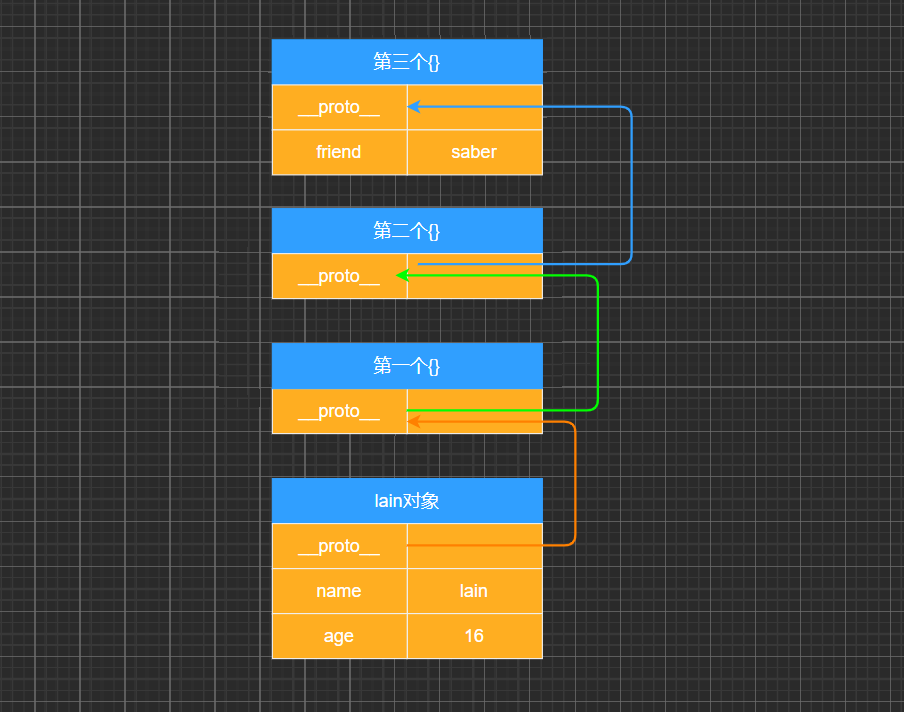
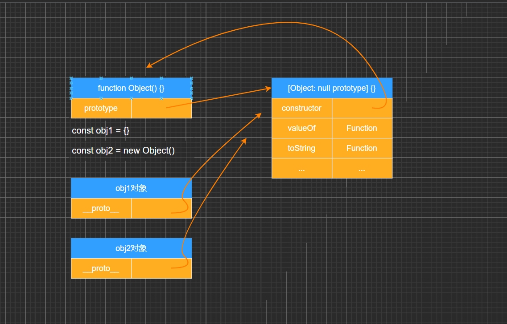
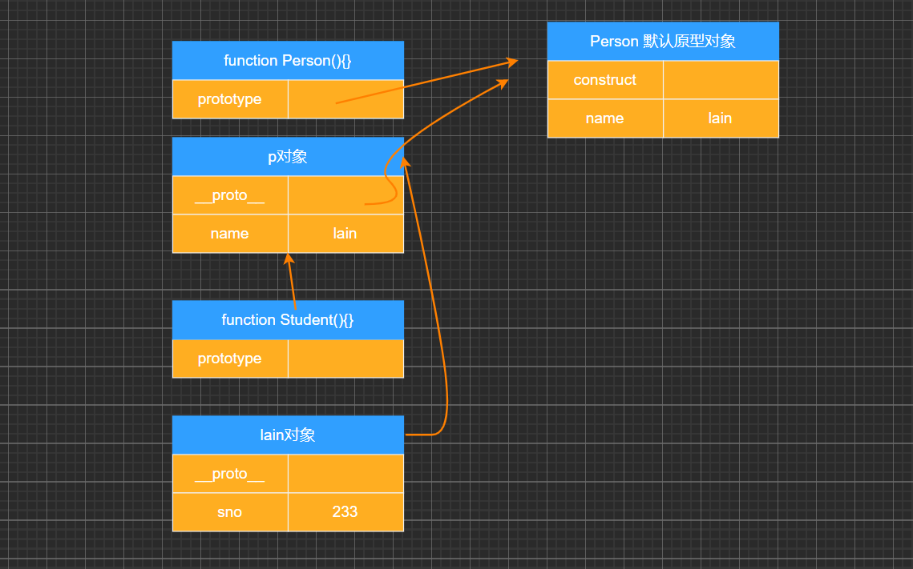
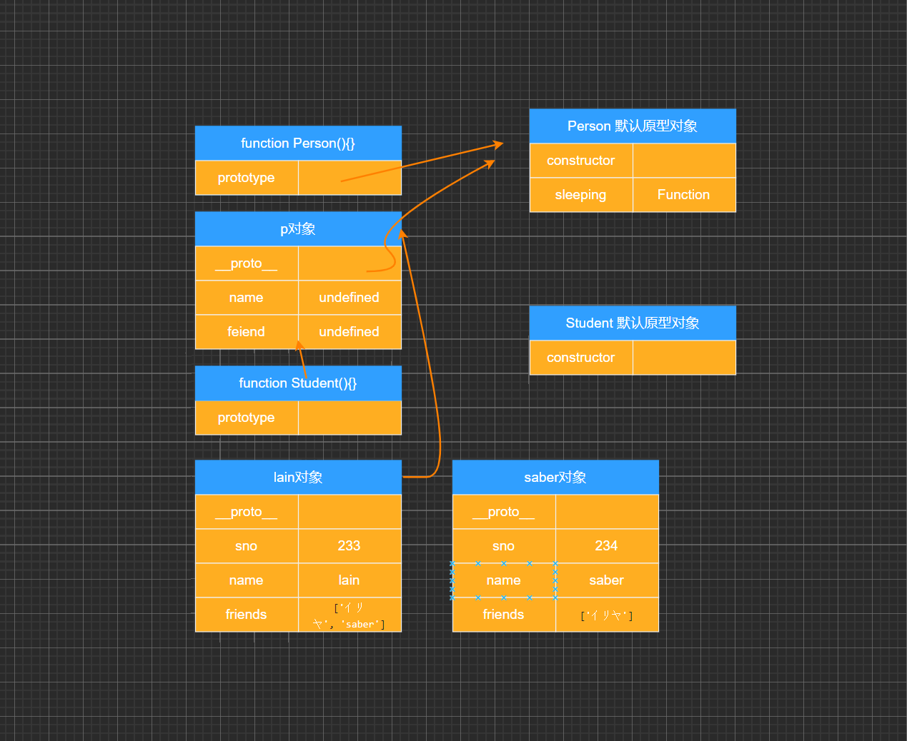

# 面向对象的特性 – 继承
- 面向对象有三大特性：封装、继承、多态
- 封装：我们前面将属性和方法封装到一个类中，可以称之为封装的过程；
- 继承：继承是面向对象中非常重要的，不仅仅可以减少重复代码的数量，也是多态前提（纯面向对象中）；
- 多态：不同的对象在执行时表现出不同的形态；
- 那么这里我们核心讲继承。
- 那么继承是做什么呢？
- 继承可以帮助我们将重复的代码和逻辑抽取到父类中，子类只需要直接继承过来使用即可。
- 那么 JavaScript 当中如何实现继承呢？
- 不着急，我们先来看一下 JavaScript 原型链的机制；
- 再利用原型链的机制实现一下继承；
# JavaScript 原型链
- 在真正实现继承之前，我们先来理解一个非常重要的概念：原型链。
- 我们知道，从一个对象上获取属性，如果在当前对象中没有获取到就会去它的原型上面获取：
const lain = { | |
name: 'lain', | |
age: 16 | |
} | |
lain.__proto__ = {} | |
lain.__proto__.__proto__ = {} | |
lain.__proto__.__proto__.__proto__ = { | |
friend: 'saber' | |
} | |
console.log(lain.friend) // saber |

# Object 的原型
- 那么什么地方是原型链的尽头呢？比如第三个对象是否也是有原型__proto__属性呢？
console.log(lain.__proto__.__proto__.__proto__.__proto__) // [Object: null prototype] {} |
-
我们会发现它打印的是 [Object: null prototype] {}
- 事实上这个原型就是我们最顶层的原型了
- 从 Object 直接创建出来的对象的原型都是 [Object: null prototype] {}。
-
那么我们可能会问题： [Object: null prototype] {} 原型有什么特殊吗？
- 特殊一：该对象有原型属性，但是它的原型属性已经指向的是 null，也就是已经是顶层原型了；
- 特殊二：该对象上有很多默认的属性和方法；
# 顶层原型是什么？
var obj = { name: "why" } | |
// console.log(obj.address) | |
// 到底是找到哪一层对象之后停止继续查找了呢？ | |
// 字面对象 obj 的原型是 [Object: null prototype] {} | |
// [Object: null prototype] {} 就是顶层的原型 | |
console.log(obj.__proto__) | |
// obj.__proto__ => [Object: null prototype] {} | |
console.log(obj.__proto__.__proto__) |
# 顶层原型来自哪里？
// 1. 在内存中创建了一个对象 | |
// 2.this 赋值 this = saber | |
// 3. 将 Object 显示原型赋值给创建出来的对象的隐式原型 | |
// saber.__proto__ = Object.prototype | |
const saber = new Object() | |
console.log(saber.__proto__ === Object.prototype) // true | |
Object.prototype.friend = 'saber' | |
console.log(saber.friend) // saber |
# 创建 Object 对象的内存图

# 原型链实现继承
- 如果我们现在需要实现继承，那么就可以利用原型链来实现了：
- 目前 stu 的原型是 p 对象，而 p 对象的原型是 Person 默认的原型，里面包含 running 等函数；
- 注意：步骤 4 和步骤 5 不可以调整顺序，否则会有问题
// 1. 定义父类构造函数 父类：公共属性和方法 | |
function Person() { | |
this.name = "lain" | |
} | |
// 2. 父类原型上添加内容 | |
Person.prototype.sleeping = function() { | |
console.log(this.name + " sleeping~") | |
} | |
// 3. 定义字类构造函数 子类：特有属性和方法 | |
function Student() { | |
this.sno = 233 | |
} | |
// 4. 创建父类对象， 并且作为字类的原型对象 | |
const p = new Person() | |
Student.prototype = p | |
// 5. 在子类原型上添加内容 | |
Student.prototype.studying = function() { | |
console.log(this.name + " studying~") | |
} | |
const stu = new Student() | |
console.log(stu.name) // lain | |
stu.sleeping() // lain sleeping~ | |
stu.studying() // lain studying~ |

# 原型链的继承方案
// 父类：公共属性和方法 | |
function Person() { | |
this.name = 'saber' | |
this.friends = [] | |
} | |
Person.prototype.sleeping = function() { | |
console.log(this.name + " sleeping~") | |
} | |
// 子类：特有属性和方法 | |
function Student() { | |
this.sno = 233 | |
} | |
// Student.prototype = p | |
const p = new Person() | |
Student.prototype = p | |
Student.prototype.studying = function() { | |
console.log(this.name + "studying~") | |
} | |
var stu = new Student() | |
// 原型链实现继承的弊端： | |
// 1. 第一个弊端：打印 lain 对象，继承的属性是看不到的 | |
console.log(stu) // Student {sno: 233} | |
console.log(stu.name) // saber | |
// 2. 第二个弊端：创建出来两个 stu 的对象 | |
const lain = new Student() | |
const saber = new Student() | |
// 直接修改对象上的属性，是给本对象添加了一个新属性 | |
lain.name = "nekoaimer" | |
console.log(saber.name) // saber | |
// 获取引用，修改引用中的值，会相互影响 | |
lain.friends.push("イリヤ") | |
console.log(lain.friends) // [' イリヤ '] | |
console.log(saber.friends) // [' イリヤ '] | |
// 3. 第三个弊端：在前面实现类的过程中都没有传递参数 | |
const stu3 = new Student("Neko") | |
console.log(stu3) // Student {sno: 233} |
- 但是目前有一个很大的弊端：某些属性其实是保存在 p 对象上的；
- 第一，我们通过直接打印对象是看不到这个属性的；
- 第二，这个属性会被多个对象共享，如果这个对象是一个引用类型，那么就会造成问题；
- 第三，不能给 Person 传递参数，因为这个对象是一次性创建的（没办法定制化）；
# 借用构造函数继承
-
为了解决原型链继承中存在的问题，开发人员提供了一种新的技术: constructor stealing (有很多名称：借用构造函数或者称之为经典继承或者称之为伪造对象)：
- psteal 是偷窃、剽窃的意思，但是这里可以翻译成借用；
-
借用继承的做法非常简单：在子类型构造函数的内部调用父类型构造函数.
- 因为函数可以在任意的时刻被调用；
- 因此通过 apply () 和 call () 方法也可以在新创建的对象上执行构造函数；
function Student(name, friend, sno){ | |
Person.call(this, name, friend, sno) | |
this.sno = sno | |
} |
完整代码
// 父类：公共属性和方法 | |
function Person(sno, name, friends) { | |
this.sno = sno | |
this.name = name | |
this.friends = friends | |
} | |
Person.prototype.sleeping = function() { | |
console.log(this.name + " sleeping~") | |
} | |
// 子类：特有属性和方法 | |
function Student(sno, name, friends) { | |
Person.call(this,sno, name, friends) | |
this.sno = sno | |
} | |
const p = new Person() | |
Student.prototype = p | |
Student.prototype.studying = function() { | |
console.log(this.name + " studying~") | |
} | |
// 原型链实现继承已经解决以下的弊端：☟ | |
// 1. 第一个弊端：打印 Amelia 对象，继承的属性是看不到的 | |
const Amelia = new Student('232', 'Amelia', ['Anna']) | |
console.log(Amelia) // Student {sno: '232', name: 'Amelia', friends: Array(1)} | |
// 2. 第二个弊端：创建出来两个 stu 的对象 | |
const lain = new Student(233, "lain", ['イリヤ']) | |
const saber = new Student(234, "saber", ['イリヤ']) | |
// 直接修改对象上的属性，是给本对象添加了一个新属性 | |
lain.name = "nekoaimer" | |
console.log(saber.name) // saber | |
// 获取引用，修改引用中的值，会相互影响 | |
lain.friends.push('saber') | |
console.log(lain.friends) // [' イリヤ ', 'saber'] | |
console.log(saber.friends) // [' イリヤ '] | |
// 3. 第三个弊端：在前面实现类的过程中都没有传递参数 | |
// const Niko = new Student("Niko", 235) | |
// 强调：借用构造函数也是有弊端: | |
// 1. 第一个弊端: Person 函数至少被调用了两次 | |
// 2. 第二个弊端: Niko 的原型对象上会多出一些属性，但是这些属性是没有存在的必要 |

# 组合借用继承的问题
- 组合继承是 JavaScript 最常用的继承模式之一：
- 如果你理解到这里，点到为止，那么组合来实现继承只能说问题不大；
- 但是它依然不是很完美，但是基本已经没有问题了；(不成问题的问题，基本一词基本可用，但基本不用)
- 组合继承存在什么问题呢？
- 组合继承最大的问题就是无论在什么情况下，都会调用两次父类构造函数。
- 一次在创建子类原型的时候；
- 另一次在子类构造函数内部 (也就是每次创建子类实例的时候)；
- 另外，如果你仔细按照我的流程走了上面的每一个步骤，你会发现：所有的子类实例事实上会拥有两份父类的属性
- 一份在当前的实例自己里面 (也就是 person 本身的)，另一份在子类对应的原型对象中 (也就是 person.__proto__里面)；
- 当然，这两份属性我们无需担心访问出现问题，因为默认一定是访问实例本身这一部分的；
- 组合继承最大的问题就是无论在什么情况下，都会调用两次父类构造函数。